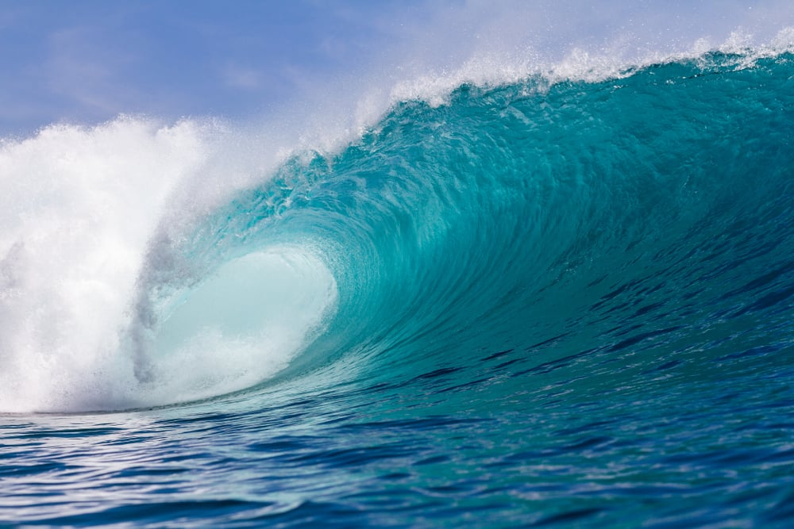

A tidal wave, more accurately called a tsunami, is a massive wave or series of waves caused by a sudden displacement of water in oceans or large lakes due to underwater earthquakes, volcanic eruptions, landslides, or even meteorite impacts. In deep water, these waves travel quickly with low amplitude, making them hard to detect, but as they approach shallow coastal areas, their speed decreases, and their height increases dramatically, causing devastating impacts on coastal regions. Despite the name, tidal waves are unrelated to tides caused by the moon's gravitational pull, and the term "tsunami" is more accurate, derived from the Japanese words for "harbor" (*tsu*) and "wave" (*nami*).
TIDAL WAVES
